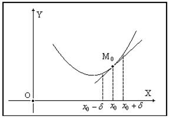
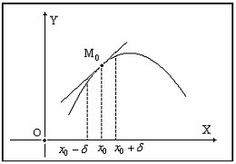
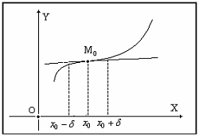
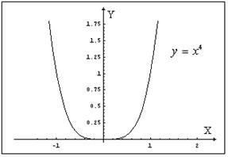

18.2.2. Направление выпуклости и точки перегиба кривой
Пусть кривая задана уравнением и
пусть функция  в точке
в точке  имеет конечную производную , то есть в точке существует касательная к данной
кривой, не параллельная оси
имеет конечную производную , то есть в точке существует касательная к данной
кривой, не параллельная оси  .
.
в точке имеет конечную производную , то есть в точке существует касательная к данной
кривой, не параллельная оси .
Если существует такая окрестность точки
, что все точки данной кривой,
абсциссы которых содержатся в этой окрестности, расположены выше касательной к
кривой в точке  , то говорят, что выпуклость
данной кривой в точке направлена вниз.
, то говорят, что выпуклость
данной кривой в точке направлена вниз.
, что все точки данной кривой,
абсциссы которых содержатся в этой окрестности, расположены выше касательной к
кривой в точке , то говорят, что выпуклость
данной кривой в точке направлена вниз.Если все точки кривой с абсциссами из некоторой окрестности
точки находятся ниже касательной к этой
кривой в точке , то говорят, что выпуклость
данной кривой в данной точке направлена вверх.
находятся ниже касательной к этой
кривой в точке , то говорят, что выпуклость
данной кривой в данной точке направлена вверх.
Будем говорить, что график функции ,
дифференцируемой на интервале , имеет на этом
интервале выпуклость, направленную вверх (вниз), если график этой функции в
пределах интервала лежит не выше ( не ниже)
любой своей касательной. О графике, выпуклом вверх, часто говорят как о просто выпуклом,
график, выпуклый вниз, называется вогнутым.
Если во всех точках интервала функция
имеет отрицательную вторую производную
(), то график функции в этом интервале
выпуклый вверх. Если - график выпуклый
вниз.
имеет отрицательную вторую производную
(), то график функции в этом интервале
выпуклый вверх. Если - график выпуклый
вниз.
Точка называется точкой
перегиба кривой , если:
1.в
точке существует касательная;
существует касательная;2.существует
такая окрестность точки , что для из
этой окрестности выпуклость кривой направлена в одну сторону, а при  – в противоположную.
– в противоположную.
, что для из
этой окрестности выпуклость кривой направлена в одну сторону, а при – в противоположную.Точка может быть
точкой перегиба кривой , только если (или не
существует).
Это условие не является достаточным.
Так, например, для функции имеем
и ,
но точка не является точкой перегиба кривой : в этой точке выпуклость кривой
направлена вниз.

Пусть функция имеет вторую
производную в некоторой окрестности точки ,
непрерывную в точке . Если и при переходе  через точку вторая
производная меняет знак, то точка есть точка перегиба кривой .
через точку вторая
производная меняет знак, то точка есть точка перегиба кривой .
имеет вторую
производную в некоторой окрестности точки ,
непрерывную в точке . Если и при переходе через точку вторая
производная меняет знак, то точка есть точка перегиба кривой .Обобщение. Пусть кривая имеет
в точке касательную, параллельную оси . Пусть функция в некоторой окрестности точки , кроме, быть может, самой точки , имеет непрерывную вторую
производную. Если в точке равна нулю или не существует и при
переходе через точку производная
меняет свой знак, то точка – точка перегиба кривой .
. Пусть функция в некоторой окрестности точки , кроме, быть может, самой точки , имеет непрерывную вторую
производную. Если в точке равна нулю или не существует и при
переходе через точку производная
меняет свой знак, то точка – точка перегиба кривой .|
|
|
Перегиб
|
|||
>0
|
вып. вниз
|
>0
|
вып. вниз
|
нет
|
|
>0
|
вып. вниз
|
<0
|
вып. вверх
|
есть
|
|
<0
|
вып. вверх
|
>0
|
вып. вниз
|
есть
|
|
<0
|
вып. вверх
|
<0
|
вып. вверх
|
нет
|